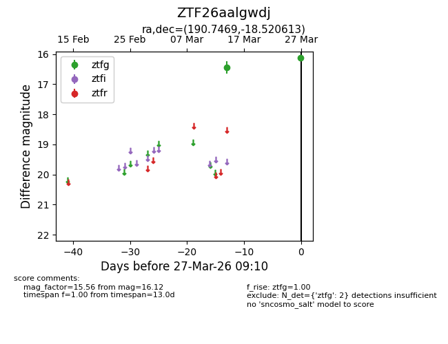
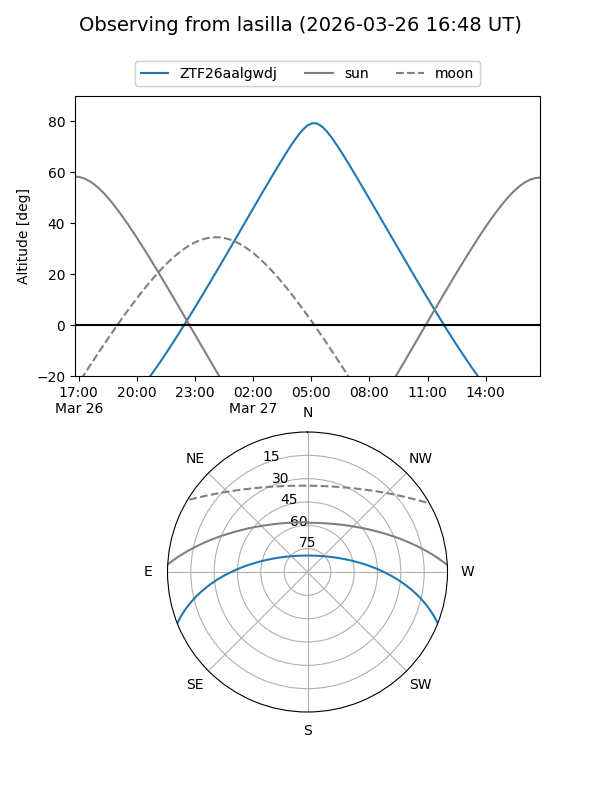
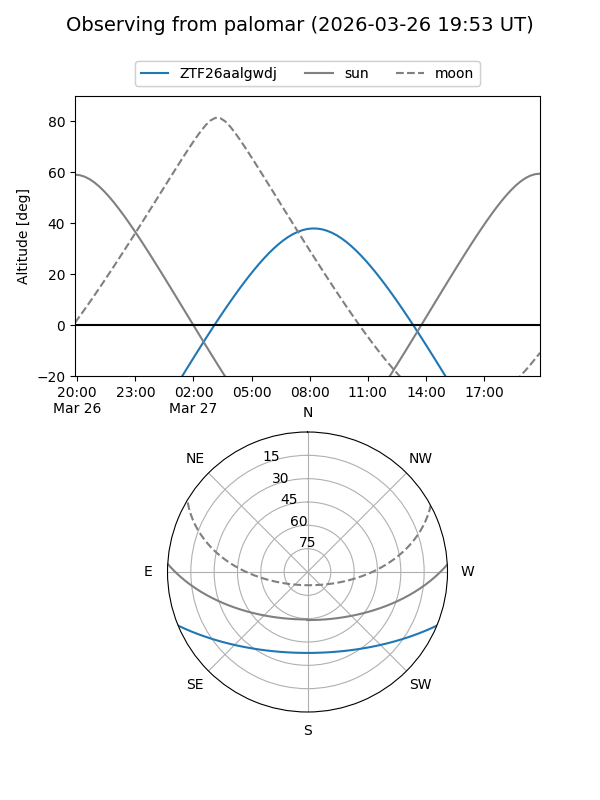

ZTF26aalgwdj
Target ZTF26aalgwdj at 2026-03-27 09:12
Aliases and brokers:
FINK: link
Lasair: link
ALeRCE: link
alt names
ZTF26aalgwdj (ztf,fink_ztf)
Coordinates:
equatorial (ra, dec) = 190.7469,-18.52061
equatorial (HMS+DMS) = 12:42:59.26,-18:31:14.21
galactic (l, b) = (300.1323,+44.30520)
Flags:
Photometry:
last ztfg=16.12
2 ztfg detections
Lightcurve

Visibility


Additional plots